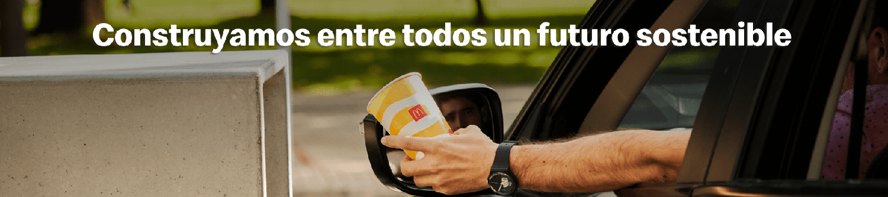

¿Qué es Arcos Dorados?
Arcos Dorados es el mayor operador de restaurantes de McDonald’s en América Latina y el Caribe y su mayor franquiciado en el mundo. La compañía tiene el derecho exclusivo a poseer, operar y otorgar franquicias de local de McDonald´s en 20 países y terrritorios de esas regiones imcluyendo a Argentina, Brasil, Uruguay, Guayana Francesa, etc.
Receta del futuro
Arcos Dorados es consciente de los desafíos actuales que enfrenta la sociedad. En este escenario, se comprometieron a ser parte activa de su solución, brindando siempre respuestas innovadoras. Así nació “Receta del Futuro”, una estrategia social y ambiental impulsada con el objetivo de impactar positivamente en aquellos sectores en donde tienen las mayores oportunidades de lograr un cambio significativo. “Receta del Futuro” es el centro de sus valores; es la oportunidad que tienen, junto a millones de clientes, empleados, proveedores y empresas de la industria de todo el mundo, de dejar su huella más allá del alcance directo de su Compañía.
¿De qué manera McDonald´s ayuda al medio ambiente?
- Utilizan materiales renovables y certificados
- Mediante la innovación en el diseño, trabajan en la transición hacia materiales 100% renovables y reciclables.
- El 100% de sus empaques de papel están certificados por FSC (Consejo de la Administración Forestal) que garantiza el cuidado responsable de los bosques.
- Reducen los Plásticos
- Dejaron de entregar sorbetes y así retiraron toneladas de residuos para evitar que impacten en el medio ambiente.
- Reemplazaron las ensaladeras plásticas por empaques reciclables.
- Desde 2019 a 2021 retiraron el 48% de plásticos de un solo uso de todos sus restaurantes.
- Reciclan el aceite
- Recuperan el aceite de cocina de sus estaurantes que se utiliza para realizar biodiesel o jabón. Solo en 2021 recolectaron más de 2.000.000 litros en toda la región.
- Cuidan el agua
- Reutilizan el agua de lluvia y de condensación de aires acondicionados para sanitarios, riego y limpieza.
- Siembran plantas autóctonas con baja necesidad de riego.
- Capacitan a sus equipos
- Realizan programas de formación para toda la compañía sobre generación, manipulación, control y disposición responsable de residuos.

Galería
Más info acá
Contacto
Sustentabilidad
Trabajo
Noticias
Lanzamientos
Menú Niños
Historia